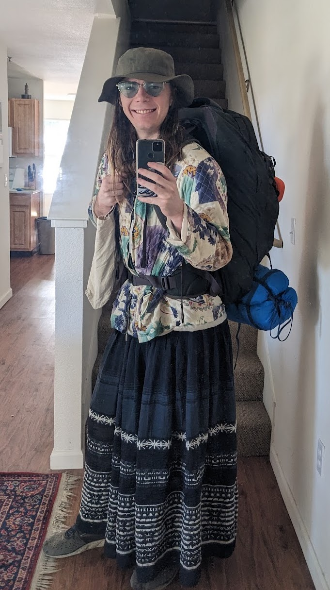

Felix Moses
I'm a software developer, EMT, and mutual aid coordinator with a passion for interesting people, puzzles, travel, and making the world a better place! I'm looking to live my life to the fullest and to set my self up in a career focused around systemic change.
My current quest is traveling the world sans plane; Trains, boats and buses abound! I love reading, playing cards, moral philosophy, cooking, nature and dancing.
I grew up mostly in Berkeley, and have lived some in San Francisco, Bethesda, Denver, Davis and Paris.
Skills
- AI: RAG, Prompt Engineering & Vector DBs
- Fullstack: Node, React Native & AWS
- Volunteer Coordination and Onboarding
- Certified EMT (From UC Davis Fire Department)
- Native Frenglish speaker; Fluent in French & English
Work Experience
2023 - 2024AI developer at Claim Manager (Remote)
Worked on AI Projects for home insurance claim management software.
2022 - 2024Community Coordinator for Davis Night Market (Davis, CA)
One of the most active volunteers at the organization and heavily involved in leadership. We reduce food waste and insecurity by collecting food from restaurants and grocery stores that would be thrown away and give it out for free.
2021 - 2023Lead mobile developer at Motili (Denver, CO)
Primary developer responsible for mobile app enabling HVAC contractors to find, schedule, complete and bill for HVAC installs. All features had to work offline and on antique phones.
2019 - 2020Intern at Apprendre Sans Frontières (Berkeley, CA)
Helped create a Raspberry Pi powered kit that was sent to schools in remote areas of Senegal without internet access to help students learn.